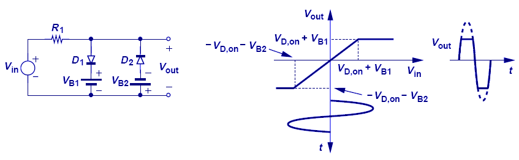
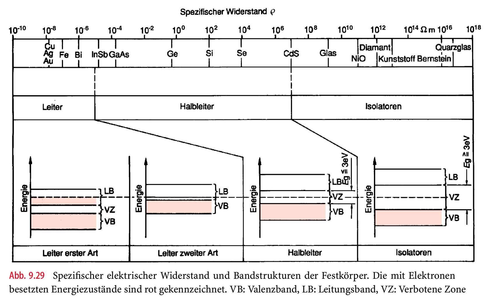
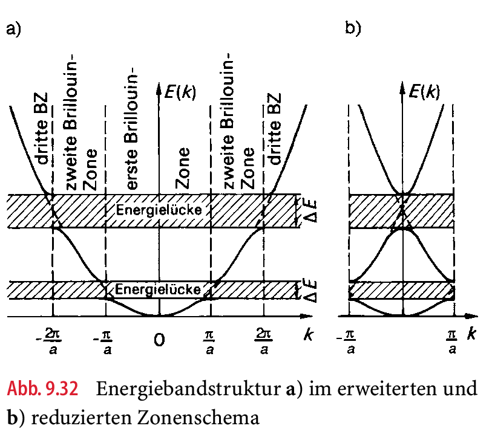
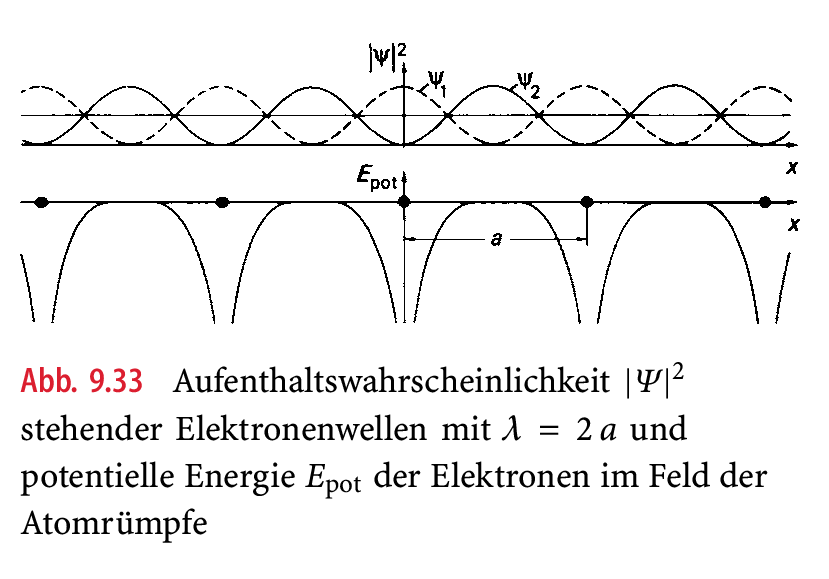
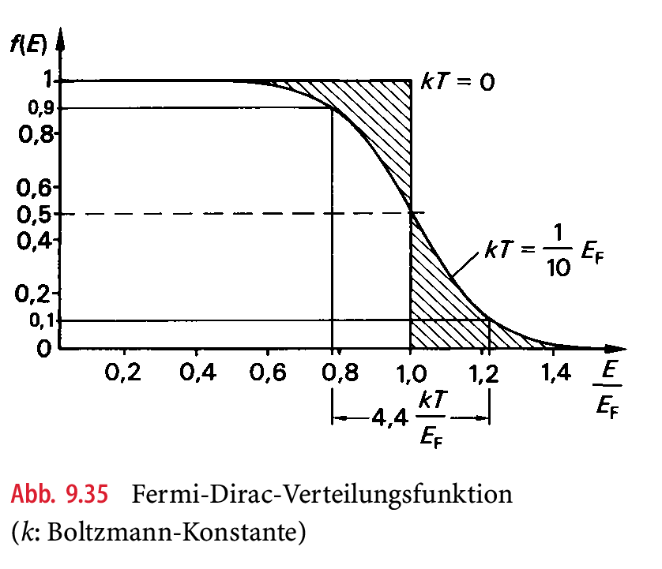
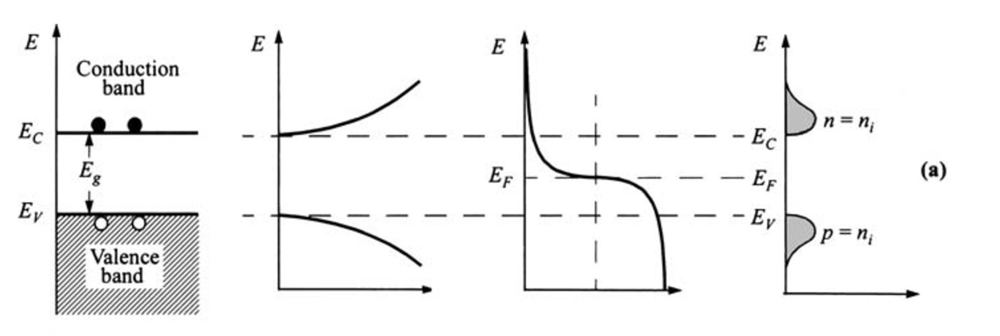
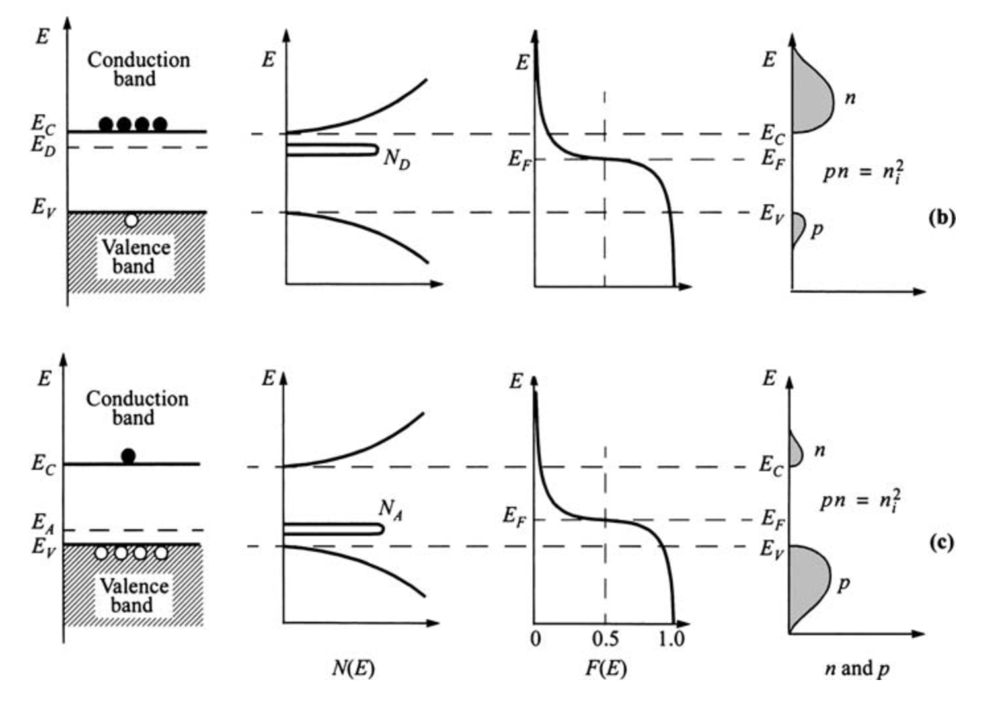
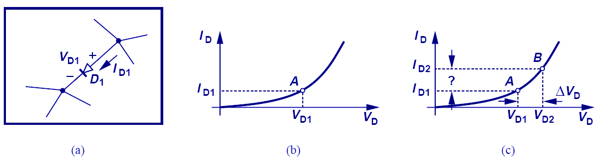

3 Diode - Modelle und Schaltungen
3.1 Diode als Schaltelemente
Vollwellengleichrichter
Einweggleichrichter
Quelle: Elektronische Bauelemente, Reisch
Spannungsverdopplung
Quelle: Elektronische Bauelemente, Reisch
Spannungsstabilisierung, Spannungsreferenz
Quelle: Elektronische Bauelemente, Reisch, Kap. 15.4
Spannungsbegrenzung

Quelle: Microelectronics, Razavi
3.2 Diode als Festkörper / Halbleiterphysik
- pn Übergang
- Ladungsträger in Festkörpern
- Kristallstruktur
- Energiezustände
- Ladungsträgerdichte
- Dotierung
- Transportmechanismen
- Drift
- Diffusion
- Ladungsträger in Festkörpern
- Ladungsträgerkonzentration
- Modell freier Elektronen
- Quantentheorie, Welle-Teilchen-Dualismus
- Schrödingergleichung, Materiewelle
- Transportmechanismen,
- Driftstrom
- Diffusionsstrom
- Thermostrom
3.3 Grundlagen der Elektrotechnik
Als Vorbereitung für ein besseres Verständnis der Halbleiterphysik, sollten die Grundbegriffe aus den Grundlagenvorlesungen der ersten beiden Semester aufgefrischt werden.
Rufen Sie sich folgende physikalische Größen und Gesetze in Erinnerung:
Elektrische Stromstärke
Elektrische Spannung
Kirchhoff’schen Gesetze
Elektrische Energie
Elektrische Leistung.
Ladung \(Q\), Einheit \([Q]\) = 1 Coulomb = 1C = 1 As
Ladung \(q\) von Ladungsträgern, elektrische Ladung ist eine Eigenschaft von Elementarteilchen.
Ladungen erzeugen Kraftfelder und üben Kräfte aufeinander aus.
\[\begin{align} \mathbf{F} &= \frac{1}{4 \pi \varepsilon} \frac{Q_1 Q_2}{r^2} \frac{\vec{r}}{r} \\ [F] &= 1N = 1 \frac{kg \, m}{s^2} = 1 \frac{Ws}{m} \end{align}\]
\[\begin{align} \mathbf{E} &= \frac{\mathbf{F}}{Q} \\ [E] & = \frac{[F]}{[Q]} = 1 \frac{N}{As} = 1 \frac{kg\,m}{A s^3} = 1 \frac{V}{m} \end{align}\]
3.4 Einführung in die Halbleiterphysik
- Quantentheorie
- Welle-Teilchen Dualismus
- Schrödinger-Gleichung
- Elektronengas
- Zustände und Aufenthaltswahrscheinlichkeiten
- Zustandsdichten: \(\int D(E)\) bzw. \(\int N(E)\)
- Fermi-Dirac-Verteilung
- Dotierung
- Donatoren und Akzeptoren
3.5 Elektronen im Festkörper

Leiter mit \(\rho < 10^{-5} \Omega m\)
Halbleiter mit \(10^{-5} \Omega m < \rho < 10^{7} \Omega m\)
Isolator mit \(\rho > 10^{7} \Omega m\)
3.6 Energiebänder-Modell
Modell gebundener Elektronen: Das Bohr’sche Atommodell beschreibt, “dass sich Elektronen, die an isolierte Atome gebunden sind, nur auf diskreten Energieniveaus aufhalten können.”
“Die Aufenthaltswahrscheinlichkeit der Elektronen um die Kerne wird durch das Quadrat der Wellenfunktion \(\lvert \Psi \lvert^2\) beschrieben.”
3.7 Wellenfunktion
Die Lösung für die Wellenfunktion \(\Psi\) liefert räumlich stehende Wellen. “Nach de Brogli kann dem Teilchen eine Welle \(\Psi\) mit dem Wellenvektor \(\mathbf{k}=\mathbf{p}/\hbar\) und der Kreisfrequenz \(\omega\) zugeordnet werden:”
Wellenfunktion (eindimensional)
\[\begin{equation} \Psi (x,t) = a \exp\left(i k_x x - i \omega t \right) = a \exp\left(\frac{i}{\hbar}\left( p_x x - E t \right) \right) \end{equation}\]
mit \(E=\hbar \omega\), \(p_x=\hbar k_x\) und \(i=\sqrt{-1}\).
3.8 Newton Mechanik vs. Quantentheorie
“In der klassischen Physik (Newton Mechanik) wird das Teilchen durch seine Bahnkurve \(\mathbf{r}(t)\) beschrieben, in der Quantentheorie dagegen nur durch seine Aufenthaltswahrscheinlichkeit \(\lvert \Psi \lvert^2 dV\).”
“Die Fundamentalgleichung der Quantentheorie, die die Bestimmung von \(\Psi\) ermöglicht, ist die Schrödinger-Gleichung (E. Schrödinger, 1887 bis 1961). Sie ist vergleichbar mit der Newton’schen Bewegungsgleichung, aus der die Bahnkurve \(\mathbf{r}(t)\) bestimmt wird.”
3.9 Schrödinger-Gleichung (zeitabhängig)
\[\begin{equation} \left( -\frac{\hbar^2}{2 m} \Delta + V(\mathbf{r}) \right) \Psi (\mathbf{r},t) = i \hbar \frac{\partial}{\partial t} \Psi (\mathbf{r},t) \end{equation}\]
wobei
\(m\), Masse des Teilchens,
\(V(\mathbf{r})\), potentielle Energie; \(\mathbf{r} = (x, y, z)\)
\(\Delta\), Laplace-Operator:
\[\begin{equation} \Delta = \frac{\partial^2}{\partial x^2} + \frac{\partial^2}{\partial y^2} + \frac{\partial^2}{\partial z^2} = \left( \frac{\partial}{\partial x}, \frac{\partial}{\partial y}, \frac{\partial}{\partial z} \right)^2 = \nabla^2 \end{equation}\]
3.10 Energiebänder-Modell (2)
Modell freier Elektronen: “Nach der Quantentheorie wird die Aufenthaltswahrscheinlichkeit der Elektronen im Kristall durch das Quadrat der Wellenfunktion \(\lvert \Psi \lvert^2\) beschrieben.”
De-Broglie-Beziehung (Teilchenbild / Wellenbild)
\[\begin{equation} p = \frac{h}{\lambda} = \frac{h}{2 \pi} \frac{2 \pi}{\lambda} = \hbar k \end{equation}\]
- Kinetische Energie der Elektronen : Der Physiker schreibt hier \(E\) anstelle von \(W\). In der Elektrotechnik ist der Buchstabe \(E\) allerdings mit dem elektrischen Feld verknüpft.
\[\begin{equation} E_{kin} = \frac{p^2}{2 m} = \frac{\hbar^2 k^2}{2 m} \end{equation}\]
3.11 Energiebandstruktur

Die kinetische Energie \(E_{kin}\) als Funktion der Wellenzahl \(k\) ergibt eine Parabel.
Für Elektronen in Kristallen ergeben sich verbotene Energiebereiche.
Stehende Wellen durch Reflexionen am Kristallgitter mit der Gitterkonstanten \(a\).
Elektronen- bzw. Materiewellen mit der Wellenlänge \(\lambda\) erfüllen die Bragg’sche Reflexionsbedingung
\[\begin{align} \lambda_n &= \frac{2 a}{\pi}, \quad n=1,2,3,... \\ k_n &= \frac{2 \pi}{\lambda_n} = \frac{\pi}{a} n \end{align}\]
3.12 Aufenthaltswahrscheinlichkeit

3.13 Reduziertes Zonenschema
“Durch Überlagerung der laufenden mit den reflektierten Wellen entstehen stehende Elektronenwellen mit ortsfesten Knoten und Bäuchen.”
“Die \(E(k)\)-Parabel bekommt daher an der Stelle \(k_1 = \pm \pi/a\) Unstetigkeitsstellen.” Dieses sind die sog. verbotenen Zonen oder Energielücken.
Aufgrund der Periodizität des \(k\)-Raumes kann die Parabel durch ein reduziertes Zonenschema dargestellt werden, vgl. Energiebandstruktur.
3.14 Besetzungswahrscheinlichkeit
Die Berechnung der Ladungsträgerdichten von Elektronen (n) und Löchern (p) erfolgt mithilfe der Fermi-Dirac-Statistik.
Modell des freien Elektronengases: “Dieses wurde von A. Sommerfeld (1868 bis 1951) vorgeschlagen und von E. Fermi (1901 bis 1954) erweitert. Es beschreibt die Leitungselektronen der Metalle so wie die frei beweglichen Moleküle eines Gases, vernachlässigt also die Wechselwirkung der Elektronen mit den ortsfesten Atomkernen und damit auch das Auftreten von Energielücken.”
“Befinden sich die Elektronen in einem Würfel der Kantenlänge \(L\), dann ist ihre Aufenthaltswahrscheinlichkeit durch das Quadrat der Wellenfunktion \(\Psi\) gegeben, die als Lösung aus der Schrödinger-Gleichung folgt.”
Streng genommen gilt das Modell des freien Elektronengases nur für \(T=0\). “Nur am absoluten Nullpunkt besetzen die Elektronen alle Energieniveaus von Null bis \(E_F\).”
Bei endlicher Temperatur nimmt die kinetische Energie des Elektronengases zu, sodass einige Energieniveaus oberhalb der Fermi-Kante besetzt werden und eine gleiche Anzahl unterhalb leer bleibt.
3.15 Fermi-Dirac-Verteilungsfunktion
- “Die Wahrscheinlichkeit, mit der ein bestimmter Energiezustand \(E\) mit Elektronen besetzt ist, wird beschrieben durch die Fermi-Dirac-Verteilungsfunktion”
\[\begin{equation} f_{FD}(E) = \frac{1}{1 + \exp\left( \frac{E - E_F}{k_B T}\right)} \end{equation}\]
3.16 Fermi-Dirac-Statistik (1)

“Die Fermi-Dirac-Statistik ist anwendbar auf Teilchen mit halbzahligem Spin, zu denen die Elektronen gehören.”
“Bei \(T=0\) sind alle Zustände unterhalb der Fermi-Energie \(E_F\) besetzt, oberhalb \(E_F\) leer: \(f_{FD}(E)=1\) für \(0 \leq E < E_F\), \(f_{FD}(E)=0\) für \(E > E_F\).”
“Bei endlicher Temperatur sind entsprechend den schraffierten Flächen Zustände unterhalb der Fermi-Energie leer und oberhalb besetzt. Die Besetzungswahrscheinlichkeit nimmt von 90% auf 10% ab innerhalb eines Energiebereiches von \(\Delta E \approx 4.4 k T\). Die bei tiefen Temperaturen scharfe Fermi-Kante weicht also mit zunehmender Temperatur immer mehr auf.”
3.17 Halbleiter im thermischen Gleichgewicht
Ladungsträgerkonzentration Elektronen \(n_0 \approx N_C \exp\left( \frac{E_F - E_C}{kT} \right)\)
Ladungsträgerkonznetration Löcher \(p_0 \approx N_V \exp\left( \frac{E_V - E_F}{kT} \right)\)
Massenwirkungsgesetz \(n_i^2(T) = n_0 \cdot p_0 = N_C N_V \exp\left( -\frac{(E_C - E_V)}{kT} \right)\)
Neutralitätsbedingung der Raumladung \(N_A^{-} + n = N_D^{+} + p\)
3.18 Intrinsischer Halbleiter

3.19 Dotierter Halbleiter

3.20 Stromgleichung
Ohmsches Gesetz für Halbleiterphysiker
Allgem. Ansatz (vektoriell)
\[\begin{align} \mathbf{J}_n &= \overbrace{e \mu_n n \mathbf{E}}^{\text{Feldanteil}} + \overbrace{e D_n \nabla n}^{\text{Diffusionsanteil}} & D_n &= \mu_n \frac{kT}{q} \quad \text{Einstein-Relation} \\ \mathbf{J}_p &= \underbrace{e \mu_p n \mathbf{E}}_{\text{Feldanteil}} - \underbrace{e D_p \nabla p}_{\text{Diffusionsanteil}} & D_p &= \mu_p \frac{kT}{q} \quad \text{Einstein-Relation} \end{align}\]
3.21 Stromgleichung 1D
Vereinf. eindimensionaler Fall
\[\begin{align} J_n &= \overbrace{e \mu_n n E}^{\text{Feldanteil}} + \overbrace{e D_n \frac{\partial n}{\partial x}}^{\text{Diffusionsanteil}} & D_n &= \mu_n \frac{kT}{q} \quad \text{Einstein-Relation}\\ J_p &= \underbrace{e \mu_p n E}_{Feldanteil} - \underbrace{e D_p \frac{\partial p}{\partial x}}_{Diffusionsanteil} & D_p &= \mu_p \frac{kT}{q} \quad \text{Einstein-Relation} \end{align}\]
3.22 Kontinuitätsgleichung
Allgem. Ansatz
\[\begin{align} \frac{\partial n}{\partial t} &= \frac{1}{e} \nabla \cdot \mathbf{J}_n - (\mathcal{R} - \mathcal{G}) & \frac{\partial p}{\partial t} &= \frac{1}{e} \nabla \cdot \mathbf{J}_p - (\mathcal{R} - \mathcal{G}) \end{align}\]
3.23 Kontinuitätsgleichung 1D
Vereinf. eindimensionaler Fall
\[\begin{align} \frac{\partial n}{\partial t} &= \frac{1}{e} \frac{\partial J_n}{\partial x} - (\mathcal{R} - \mathcal{G}) & \frac{\partial p}{\partial t} &= \frac{1}{e} \frac{\partial J_p}{\partial x} - (\mathcal{R} - \mathcal{G}) \end{align}\]
3.24 Poisson-Gleichung
- “Für eine vollständige Beschreibung der Vorgänge im Halbleiter unter Nichtgleichgewichtsbedingungen sind die Strom- und Kontinuitätsgleichungen durch eine Beziehung zu ergänzen, die es erlaubt, die elektrische Feldstärke bzw. das elektrostatische Potential aus der Verteilung der Ladungen zu berechnen.”
\[\begin{equation} \nabla \cdot \mathbf{E} = -\nabla^2 \varphi = \frac{\varrho}{\varepsilon_0 \varepsilon_r} \end{equation}\]
- Hierbei bezeichnet \(\varrho\) die Raumladung
\[\begin{equation} \varrho = e \left( p - n + N_D^{+} - N_A^{-} \right) \end{equation}\]
3.25 Abrupter pn-Übergang
Quelle: Elektronische Bauelemente, Reisch, 2007, Kap. 14
3.26 Sperrschichtnäherung (1)

Quelle: Microelectronics, Razavi
Quelle: Elektonische Bauelemente, Reisch
3.27 Speicherladung / Schaltverhalten
Spannungsabhängiger Kondensator

Quelle: Microelectronics, Razavi
3.28 Sperrschichtkapazität
Quelle: Elektronische Bauelemente, Reisch
3.29 Diffusionskapazität
Quelle: Elektronische Bauelemente, Reisch
3.30 Sättigungsstrom
Der Sättigungsstrom ist eine für die jeweilige Diode charakteristische Konstante.
3.31 Temperaturabhängigkeit
Diodenparameter eine Funktion der Temperatur
3.32 Modellierung
Diode als Schalter (oder Wasserventil)
Diode als Konstantspannungsquelle
Diode mit Großsignal- und Kleinsignalverhalten
3.33 Ideale Diode
Quelle: Aktive Elektronische Bauelemente, Stiny
3.34 Näherungen der Diodenkennlinie - 0. Ordn.
Quelle: Aktive Elektronische Bauelemente, Stiny
3.35 Näherung der Diodenkennlinie – 1. Ord.
Quelle: Aktive Elektronische Bauelemente, Stiny
Quelle: Aktive Elektronische Bauelemente, Stiny
3.36 IV Charakteristik (real)
3.37 Großsignal- und Kleinsignalmodell
Großsignalmodell Kleinsignalmodell
Quelle: Elektronische Bauelemente, Reisch
3.38 SPICE Modellanweisung
Quelle: Elektronische Bauelemente, Reisch
3.39 Kleinsignalanalyse
Tangente an die Diode im Arbeitspunkt (AP).
Quelle: Aktive elektronische Bauelemente, Stiny
3.40 Innerer Diodenleitwert
Quelle: Aktive elektronische Bauelemente, Stiny
differenzieller Widerstand
3.41 Kleinsignalübertragung
Quelle: Aktive elektronische Bauelemente, Stiny
3.42 Übungen SPICE Analysen
Gleichstromanalyse – die .op-Anweisung , Ref. Kap. 4.4.1, Reisch, 2007Anzeige der Kleinsignalkenngrößen im Arbeitspunkt (AP)
Arbeitspunkt bei Spannungssteuerung, Ref. Kap. 14.1.4, Reisch, 2007Iterative Lösung der nicht-linearen Beziehung zw. Diodenstrom (ID) und Diodenspannung (VD), vgl. Bsp. 14.1.5
Admittanz einer Diode, Bsp. 14.3.1Handrechnung und SPICE .ac-Analyse
4 Anhang
4.1 Kleinsignalanalyse (1)

Quelle: Microelectronics, Razavi

4.2 Beispiel: Adapter/Ladegerät
2,4 V Ladegerät verloren; Ersatzschaltung bauen mit einem3V-Adapter.
Bestimmen Sie den Sättigungsstrom der drei Dioden, so dass die Ausgangsspannung 2,4 V beträgt. Vernachlässigen Sie zur Vereinfachung dabei den Strom in das Mobiltelefon.
Bestimmen Sie die Ausgangsspannung, wenn der Adapter 3,1V liefert.
Quelle: Microelectronics, Razavi
4.3 Lösung Adapteraufgabe (1)
Bestimmung des Diodenstroms
Man erwartet einen kleinen Anstieg der Ausgangsspannung. Um den Grund dafür zu verstehen, wird die Schaltung zu erst mit der Annahme konstanter Ausgangsspannung betrachtet. Dann fällt die zusätzliche Spannung von 0,1 V über dem Widerstand ab und der Diodenstrom steigt auf 7 mA.
Mit diesem Ergebnis beginnt die Interation:
Diese Iteration zeigt, dass das bisherige Modell der Diode als Konstantspannungsquelle für diese Fragestellung nicht nützlich ist.
4.4 Adapter Recall
Mit dem Verständnis der Kleinsignalanalyse kann die Schaltungsauslegung ohne Iteration durchgeführt werden.

Quelle: Microelectronics, Razavi
4.5 KISS Prinzip
Unter Verwendung der Kleinsignalanalyse kann auch der zusätzliche Laststsrom einfach berücksichtigt werden.
Stellen Sie sich vor, dieses mit den nicht-linearen Gleichungen zu lösen.

Quelle: Microelectronics, Razavi